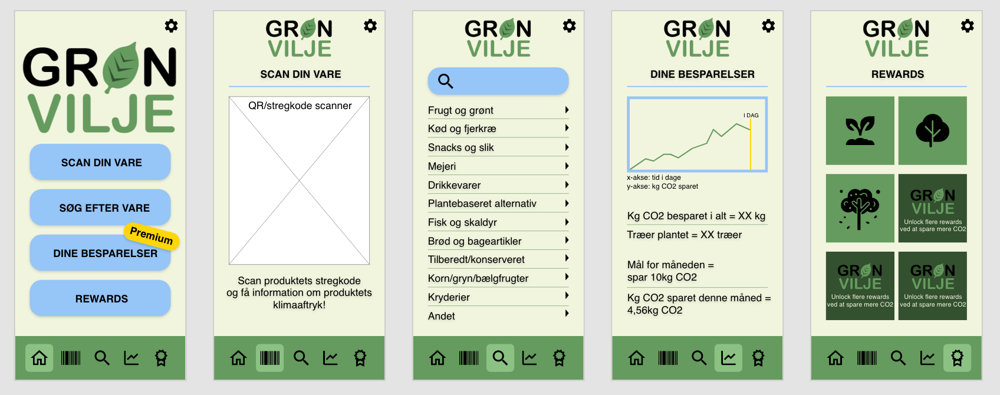

Case
Udvikle en ide og opstarte en virksomhed
Koncept
Vores koncept gik ud på at udvikle en ide som ville hjælpe og oplyse danskerne om hvordan de kan handle mere klimavenligt. Vi ville lave et produkt som var brugervenligt, og ikke indeholdte for meget uoverskueligt tekst.
Løsning
Vores løsning på dette blev at vi udarbejdede en prototype af en app hvor at der er muligt for brugeren søge eller scanne varer når de står i supermarkedet. Det vil være muligt at tilkøbe et abonnement som gør det muligt for brugeren at optjene trofæer og tracke deres sparede CO2 aftryk.
Min Rolle
Min rolle i projektet var at få styr på vores design proces og holde styr på om vi fik afleveret vores produkt til tiden, hvilket vi gjorde.